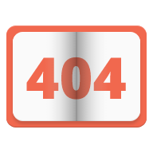

<!--
@license
Copyright (c) 2016 The Polymer Project Authors. All rights reserved.
This code may only be used under the BSD style license found at http://polymer.github.io/LICENSE.txt
The complete set of authors may be found at http://polymer.github.io/AUTHORS.txt
The complete set of contributors may be found at http://polymer.github.io/CONTRIBUTORS.txt
Code distributed by Google as part of the polymer project is also
subject to an additional IP rights grant found at http://polymer.github.io/PATENTS.txt
-->

<link rel="import" href="../bower_components/polymer/polymer.html">
<link rel="import" href="../bower_components/paper-button/paper-button.html">

<dom-module id="my-view404">
  <template>
    <style>
      :host {
        display: block;
        background-color: #f1684e;
        height: 100vh;
        width: 100%;
      }
      .content {
        position: relative;
        background-color: #fafafa;
        max-width: 1440px;
        max-height: 500px;
        margin-left: auto;
        margin-right: auto;
        top: 50%;
        -webkit-transform: translateY(-50%);
        -ms-transform: translateY(-50%);
        transform: translateY(-50%);
      }
      .inside {
        position: relative;
        max-width: 800px;
        height: 100%;
        margin-left: auto;
        margin-right: auto;
        text-align: center;
        padding-top: 32px;
        padding-bottom: 32px;
      }
      a {
        text-decoration: none;
        color: #212121;
      }
    </style>

    <div class="content">
      <div class="inside">
        </img>
        <h2>Упс... Такой страницы пока еще нету :(</h2>
        <a href="/"><paper-button>Вернуться на главную</paper-button></a>
      </div>
    </div>
  </template>

  <script>
    Polymer({
      is: 'my-view404',
    });
  </script>
</dom-module>
